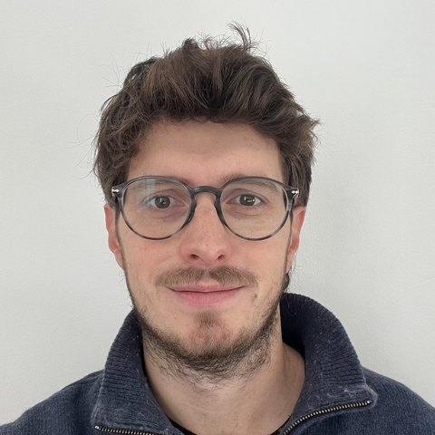

I am a PhD candidate at the Department of Economics, University of Bologna, supervised by Emanuele Campiglio and Jérémy Boccanfuso.
My field lies at the intersection of environmental economics and international trade. My research focuses on the consequences of water scarcity, from migration to conflict, combining empirical analysis with quantitative spatial models.
In spring 2026 I visited the Migration and Sustainable Development group at IIASA, hosted by Roman Hoffmann. In spring 2027 I will visit Universitat Pompeu Fabra, hosted by Dávid Nagy and Bruno Conte.
I co-organize the BEEG Seminar; if you are interested in presenting, please reach out.
You can reach me at lorenzo.casprini@unibo.it or connect with me on LinkedIn.
